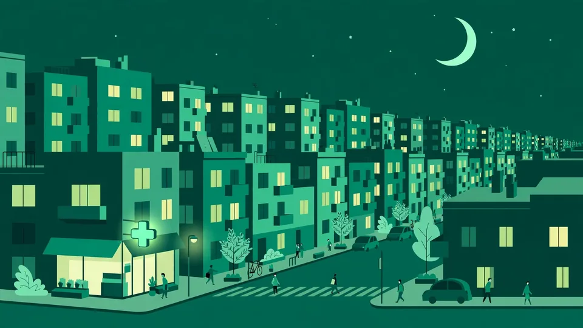

মিরপুর ও উত্তরায় রাতের ফার্মেসি

মিরপুর ১০ থেকে উত্তরা সেক্টর ১৩ — রাতে খোলা ফার্মেসির তালিকা, শুক্রবারের ব্যতিক্রম আর রাত ১২টার পরের বিকল্পসহ।
মিরপুর ও উত্তরায় রাতে ফার্মেসি
মিরপুর ও উত্তরা ঢাকার দুটো বড় আবাসিক এলাকা, আর এখানে রাতের ফার্মেসির বিকল্পও অনেক। মিরপুরে লাজ ফার্মার একাধিক শাখা আছে — মিরপুর ১০, মিরপুর ১১, মিরপুর ১২, মিরপুর ডিওএইচএস, মাজার রোড — বেশিরভাগই রাত ১১টা-১২টা পর্যন্ত খোলা। উত্তরায় লাজ ফার্মার দুটো শাখা রাত ১১টা-১২টা পর্যন্ত খোলা, তামান্না ফার্মেসি উত্তরা সেক্টর ১৩ শাখা রাত পৌনে ১২টা পর্যন্ত খোলা।
তবে সত্যি কথাটা হলো: মিরপুর-উত্তরায় রাত ১২টার পরে ২৪ ঘণ্টা খোলা ফার্মেসির বিকল্প আমাদের তালিকায় সীমিত। তাই রাতের দিকে ওষুধ লাগলে সবচেয়ে ভালো উপায় হলো — রাত ১১টার আগেই ফোন করে স্টক নিশ্চিত করে ফেলা, আর রাত ১২টার পরে লাগলে কাছের হাসপাতালের ফার্মেসির দিকে যাওয়া। মিরপুর থেকে ধানমন্ডির ২৪ ঘণ্টার ফার্মেসি বা বসুন্ধরার এভারকেয়ার হাসপাতালের ফার্মেসি — রাতে রাস্তা ফাঁকা থাকলে এগুলোতে পৌঁছাতে খুব বেশি সময় লাগে না।
মিরপুর ও উত্তরার রাতের ফার্মেসি
- Bangladesh Pharmacy — Uttara (Chalbon) Azambag, Chalbon, Uttara, Dhaka-1230 9:00 AM – 2:00 PM and 4:00 PM – 12:00 AM, Sat–Thu; closed Friday — শুক্রবার বন্ধ — দুপুর ২টা–৪টা বিরতি 01677 602 723 অযাচাইকৃত নম্বর
- IBN SINA Pharmacy — Mirpur (Rupnagar) House 11, Haji Road, Avenue 3, Rupnagar, Mirpur-2, Dhaka-1216 সময় নিশ্চিত নয় — যাওয়ার আগে ফোন করে নিন 09610 009 621
- IBN SINA Pharmacy — Uttara House 52, Garib-E-Newaz Avenue, Sector 13, Uttara, Dhaka-1230 সময় নিশ্চিত নয় — যাওয়ার আগে ফোন করে নিন 09610 009 612
- Lazz Pharma — Darus Salam (Mirpur 1) Darus Salam Road, Mirpur-1, Dhaka 10:00 AM – 11:00 PM, every day 01730 594 863
- Lazz Pharma — Mirpur 10 Plot 20 & 21, Mirpur Road, Senpara Parbata, Mirpur-10, Dhaka 8:00 AM – 12:00 AM, every day 01790 745 120
- Lazz Pharma — Mirpur 11 House 13, Road 16, Block D, Mirpur, Dhaka সময় নিশ্চিত নয় — যাওয়ার আগে ফোন করে নিন 01332 502 471
- Lazz Pharma — Mirpur DOHS Mirpur DOHS (near Jamjam Park), Dhaka সময় নিশ্চিত নয় — যাওয়ার আগে ফোন করে নিন 01336 569 376
- Lazz Pharma — Mirpur Mazar Road 137/16, Golden Shower, Mazar Road, Mirpur-1, Dhaka সময় নিশ্চিত নয় — যাওয়ার আগে ফোন করে নিন 01753 036 300
- Lazz Pharma — Uttara 1 Uttara Tower, Jashimuddin Avenue, Sector-3, Uttara, Dhaka 8:30 AM – 11:30 PM, every day 01828 546 574
- Lazz Pharma — Uttara 2 Plot-39, Talia Center, Sonargaon Janapath, Sector-7, Uttara, Dhaka 7:00 AM – 12:00 AM, every day 01764 180 194
- Lifeline Pharmacy — Uttara Sector 11 House 2, Road 16, Sector 11, Uttara, Dhaka 9:00 AM – 11:00 PM, every day 01717 650 148
- Popular Medicine Corner — Mirpur (Unit 1) House 67, Avenue 5, Block C, Section-6, Mirpur (Original-10), Pallabi, Dhaka 7:00 AM – 11:00 PM, every day 09666 787 807
- Popular Medicine Corner — Mirpur (Unit 2) House 02, Avenue 01, Block A, Section-10 (Banaroshi Polli Gate-01), Pallabi, Mirpur, Dhaka 7:00 AM – 11:00 PM, every day 09666 787 807
- Popular Medicine Corner — Uttara (Unit 1) House 21, Road 7, Sector 4, Jashim Uddin More, Uttara, Dhaka-1230 7:00 AM – 11:00 PM, every day 09666 787 805
- Popular Medicine Corner — Uttara (Unit 2) House 25, Road 7, Sector 4, Jashim Uddin More, Uttara, Dhaka 7:00 AM – 11:00 PM, every day 09666 787 805
- Popular Medicine Corner — Uttara Garib-E-Newaz House 41, Garib-E-Newaz Avenue, Sector 13, Uttara, Dhaka 7:00 AM – 11:00 PM, every day 09666 787 823
- Tamanna Pharmacy — Uttara Sector 13 4, Gareeb-E-Newaz Ave, Sector 13, Uttara, Dhaka 12:00 AM – 11:45 PM, every day 01883 929 394
এই এলাকার লাজ ফার্মার অনেক শাখার সময় আমাদের তথ্যে নিশ্চিত নয় — নিচে যেখানে “সময় নিশ্চিত নয়” লেখা, সেখানে যাওয়ার আগে অবশ্যই ফোন করে নিন।
শুক্রবারের ব্যতিক্রম — উত্তরায়
উত্তরার বাংলাদেশ ফার্মেসি (চালবন) শুক্রবারে বন্ধ থাকে, আর প্রতিদিন দুপুর ২টা থেকে ৪টা পর্যন্ত বিরতি থাকে। শুক্রবারে উত্তরায় ওষুধ লাগলে তাই এই ফার্মেসির ওপর ভরসা না করে লাজ ফার্মা উত্তরা বা তামান্না ফার্মেসিতে ফোন করুন — ওই দুটো শুক্রবারেও খোলা থাকে বলে আমাদের তথ্যে আছে। দক্ষিণখানের সাদিয়া ফার্মেসিও শুক্রবারে বন্ধ থাকে, যদিও সেটা উত্তরার ঠিক পাশের এলাকা।
মিরপুরে রাত ১২টার পর কী করবেন?
মিরপুর ১০-এর লাজ ফার্মা রাত ১২টা পর্যন্ত খোলা — এটাই মিরপুরে সবচেয়ে দেরিতে বন্ধ হওয়া শাখাগুলোর একটি। রাত ১২টার পরে ওষুধ লাগলে সবচেয়ে কাছের ২৪ ঘণ্টার বিকল্প হলো ঢাকা মেডিকেল কলেজ হাসপাতালের পাশের লাজ ফার্মা বা বসুন্ধরার এভারকেয়ার হাসপাতাল ফার্মেসি। রাতে যাওয়ার আগে ফোনে স্টক জেনে নিন, আর সঙ্গে প্রেসক্রিপশন রাখুন — হাসপাতালের ফার্মেসিগুলো প্রেসক্রিপশন ছাড়া অনেক ওষুধ দিতে চায় না।
মিরপুরের কোন সেকশনে কী আছে?
মিরপুর বড় এলাকা, আর কোন সেকশনে কোন ফার্মেসি সেটা জানা থাকলে রাতে ভুল দিকে যাওয়া কমে। মিরপুর ১০-এ লাজ ফার্মার শাখা রাত ১২টা পর্যন্ত খোলা — এটাই মিরপুরের সবচেয়ে দেরিতে বন্ধ হওয়া শাখা। মিরপুর ১-এ দারুস সালাম রোডের লাজ ফার্মা রাত ১১টা পর্যন্ত খোলা, মাজার রোডের শাখার সময় আমাদের তথ্যে নিশ্চিত নয়। মিরপুর ১১ ও ১২-এর শাখাগুলোর সময়ও নিশ্চিত নয় — তাই ওইদিকে যাওয়ার আগে ফোন করে নিন। মিরপুর ডিওএইচএসের শাখাটি জমজম পার্কের কাছে। পপুলার মেডিসিন কর্নারের মিরপুর শাখা দুটো রাত ১১টা পর্যন্ত খোলা। রাত ১১টার পরে মিরপুরে সবচেয়ে ভালো উপায়: মিরপুর ১০-এর লাজ ফার্মায় ফোন করুন, আর সেটা বন্ধ হয়ে গেলে হাসপাতালের ২৪ ঘণ্টার ফার্মেসির দিকে যান।
উত্তরায় রাতে যাতায়াত
উত্তরা ঢাকার উত্তর প্রান্তে, আর রাতে এখান থেকে অন্য এলাকায় যাওয়া সময়সাপেক্ষ হতে পারে। তাই উত্তরায় রাতে ওষুধ লাগলে প্রথমে নিজের সেক্টরের ফার্মেসিতেই ফোন করুন — লাজ ফার্মা উত্তরা ১ ও ২, তামান্না ফার্মেসি সেক্টর ১৩, পপুলার মেডিসিন কর্নার সেক্টর ৪ ও ১৩ — এগুলো রাত ১১টা থেকে পৌনে ১২টা পর্যন্ত খোলা। সেক্টর ৩-এর জসীমউদ্দীন অ্যাভিনিউ আর সেক্টর ৭-এর সোনারগাঁও জনপথ — দুটো প্রধান রাস্তাতেই লাজ ফার্মার শাখা আছে। রাইড শেয়ারিং অ্যাপ রাতে উত্তরায় সাধারণত পাওয়া যায়, তবে ভোররাতে অপেক্ষা করতে হতে পারে। তাই রাত ১১টার আগেই ফোন করে স্টক নিশ্চিত করে ফেলুন — এতে রাত ১২টার পরে দৌড়াতে হয় না।
রাতের জন্য আগে থেকে প্রস্তুতি
মিরপুর-উত্তরায় যেহেতু রাত ১২টার পরে ২৪ ঘণ্টার ফার্মেসির বিকল্প সীমিত, তাই ঘরে কিছু জরুরি ওষুধ আগে থেকে রাখাই সবচেয়ে ভালো প্রস্তুতি। জ্বরের ওষুধ, গ্যাস্ট্রিকের ওষুধ, ব্যথার ওষুধ, ব্যান্ডেজ আর স্যালাইন — এগুলো ঘরে থাকলে মাঝরাতে ছোট সমস্যায় বাইরে যেতে হয় না। তবে ওষুধের মেয়াদোত্তীর্ণের তারিখ মাসে একবার দেখে নিন — মেয়াদ শেষ হওয়া ওষুধ কাজ করে না, উল্টো ক্ষতি করতে পারে। আর নিয়মিত ওষুধ (প্রেসার, ডায়াবেটিস, থাইরয়েড) ফুরানোর আগেই কিনে রাখুন — রাত ১২টার পরে এগুলো খুঁজতে বেরোনো সবচেয়ে কঠিন।
অ্যালার্জি আর নিয়মিত ওষুধের তালিকা সঙ্গে রাখুন
রাতে ফার্মেসিতে গেলে ফার্মাসিস্ট প্রায়ই জিজ্ঞেস করেন — কোনো ওষুধে অ্যালার্জি আছে কিনা, আর কী কী ওষুধ নিয়মিত খান। এই তথ্য মুখস্থ না থাকলে ভুল ওষুধ দেওয়ার ঝুঁকি থাকে। তাই ফোনে একটা ছোট তালিকা রাখুন: নিয়মিত ওষুধের নাম ও ডোজ, কোনো অ্যালার্জি থাকলে সেটা, আর ডাক্তারের নাম-নম্বর। রাতে জরুরি অবস্থায় এই তালিকাটা ফার্মাসিস্টকে দেখালে সঠিক ওষুধ পাওয়া অনেক সহজ হয়। বয়স্ক বাবা-মায়ের ক্ষেত্রে এই তালিকাটা আরও জরুরি — তাদের ওষুধের তালিকা ছেলে-মেয়ের ফোনেও থাকা উচিত, যাতে রাতে যে-ই যাক, তথ্যটা হাতে থাকে।
তথ্য যাচাই নিয়ে
এই পাতার সব ফোন নম্বর, ঠিকানা ও সময় ২৬ নভেম্বর ২০২৬ পর্যন্ত প্রকাশিত উৎস থেকে যাচাই করা — কোনো নম্বর বা সময় বানানো হয়নি। যেখানে যাচাই করা যায়নি, সেখানে “সময় নিশ্চিত নয়” বা “অযাচাইকৃত নম্বর” লেখা আছে। সময় বদলাতে পারে, তাই যাওয়ার আগে ফোন করে নিন। ভুল তথ্য চোখে পড়লে ফাইন্ডারে ফার্মেসি কার্ডের “সময় ভুল মনে হচ্ছে?” লিংক থেকে জানান।